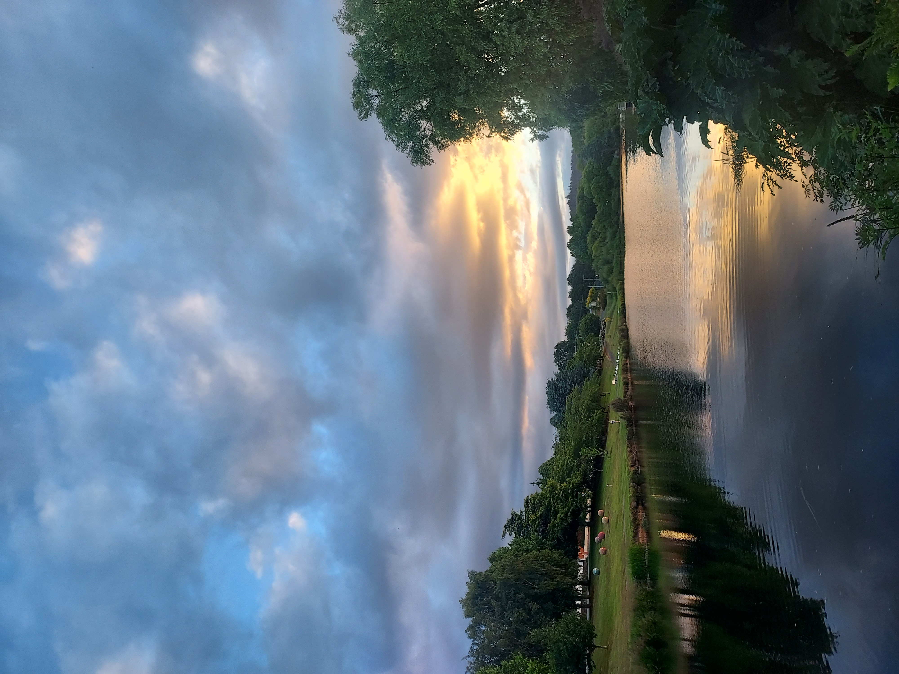
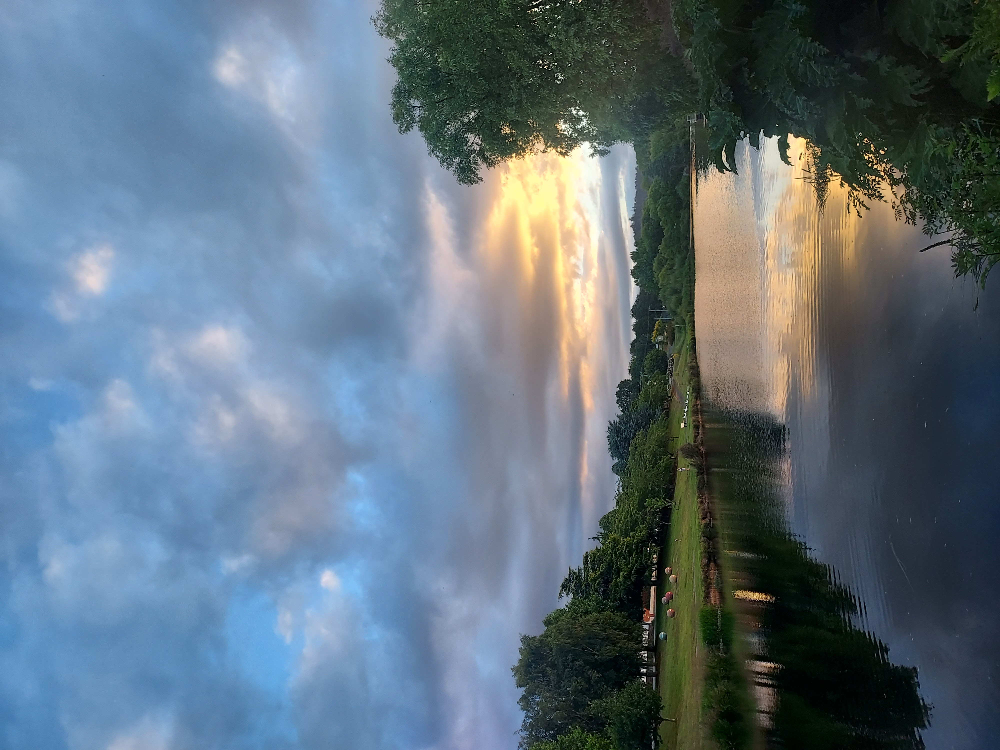
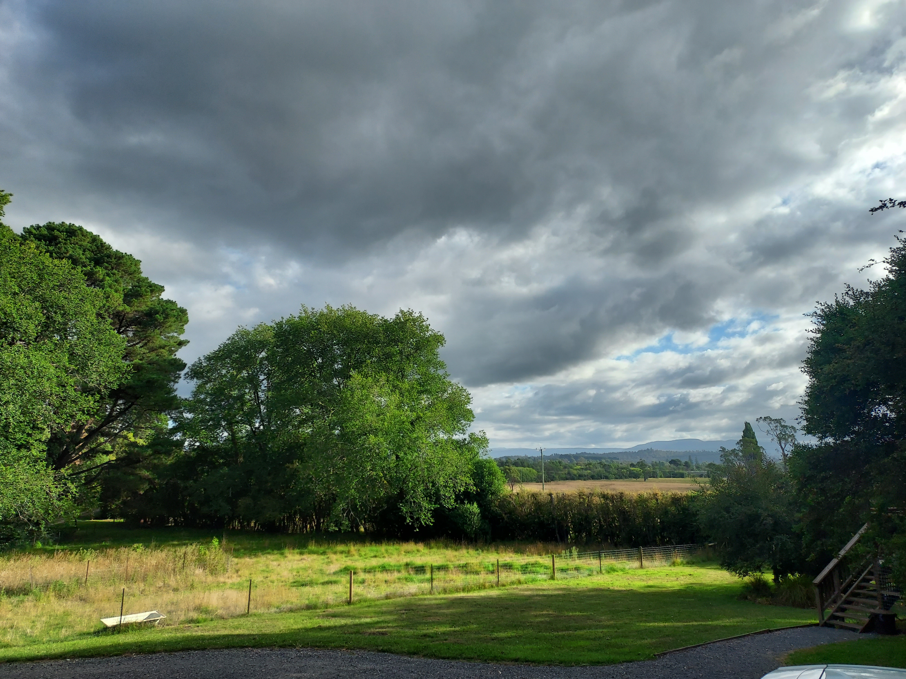
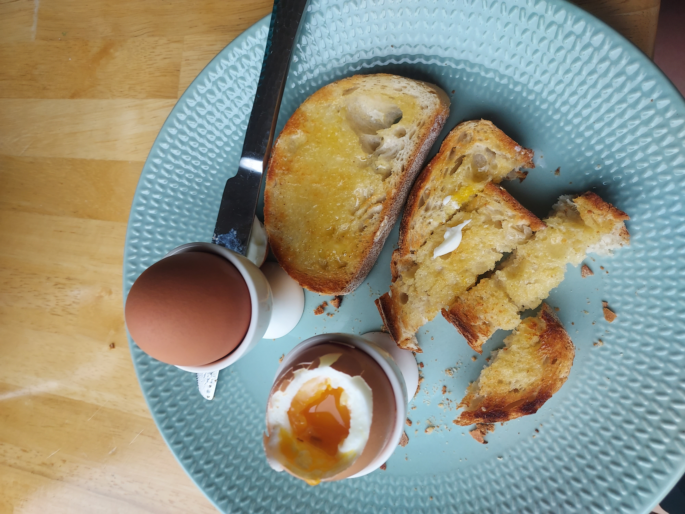
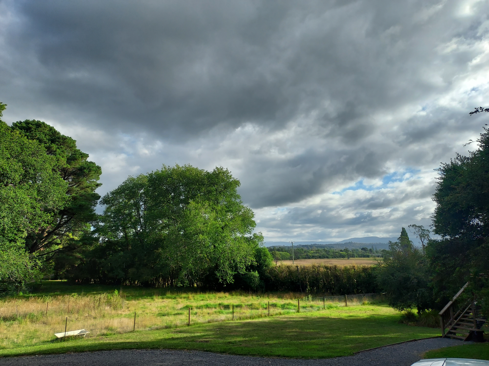
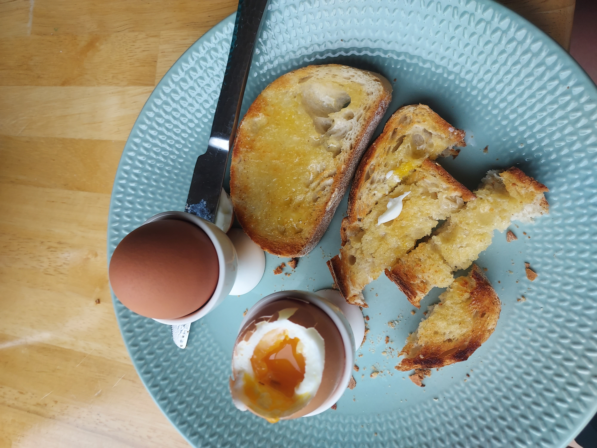
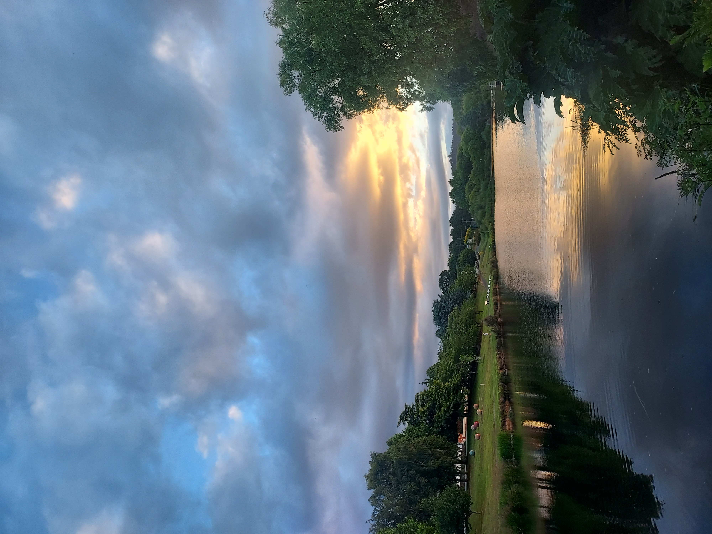
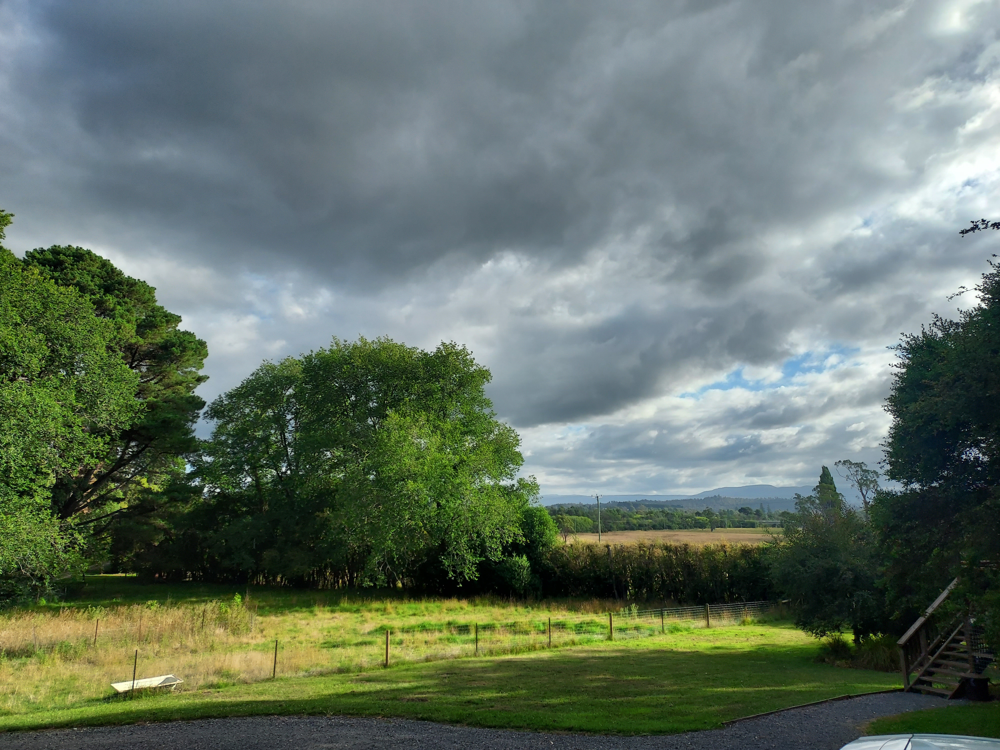
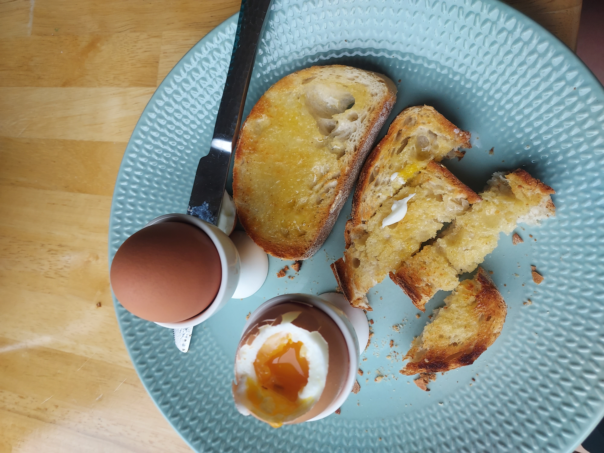

 



a brief moment of goodness (thanks to the pub owner)
in a town called Deloraine there are 6 wild platypus(s) that live in the river that runs through the town and I got to see one of them for about 2 seconds Deloraine is approximately 20-30 minutes outside of Launceston. Cradle Mountain is 1.5 hours drive away.


